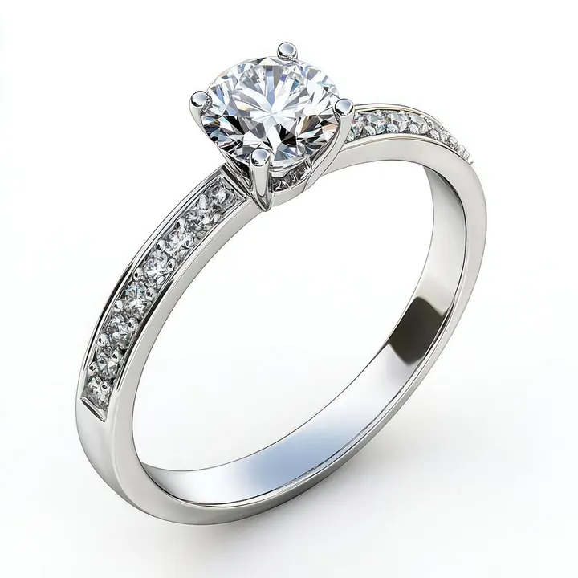

圓明亮式 57 面之謎：每顆鑽石的數學課
57 這個數字不是美學的偶然，而是一道百年數學題的答案——它讓光在鑽石裡「彈」得剛剛好。

核心定義
圓明亮式（round brilliant）是目前市面最主流、也是對光學效率研究最透徹的鑽石切割。它的標準刻面總數是 57 面：冠部（crown，腰圍以上）33 面、亭部（pavilion，腰圍以下）24 面，加上一圈水平磨平的腰圍（girdle）。如果切磨師在亭部最底端多磨出一個小八角尖底（culet），總數就會變成 58 面——所以「57 或 58」都對，差別只在那一面看不見的尖底。
為什麼是這組數字？因為每一種刻面都有分工：冠部的檯面（table）與星刻面（star facets）負責把光接進來，冠部的上腰刻面把光折射出去；亭部的下腰刻面與亭面則負責把光反射回檯面。面數太多會把光打散，太少則光線導向不足——57 是經過光學計算的平衡點。
特徵與分類
| 部位 | 刻面數 | 角色 |
|---|---|---|
| 檯面 table | 1 | 最大一面，主要入光窗 |
| 冠部主刻面 crown mains | 8 | 把入光導向亭部 |
| 星刻面 star facets | 8 | 讓亮光更柔和均勻 |
| 上腰刻面 upper girdle facets | 16 | 修飾腰圍與冠部交接 |
| 亭部主刻面 pavilion mains | 8 | 全內反射的主力 |
| 下腰刻面 lower girdle facets | 16 | 補光、增加火光 |
冠部合計 1+8+8+16=33 面，亭部 8+16=24 面，總計 57。若加尖底則 58。這個結構在 1919 年由 Tolkowsky 以幾何光學推導成形，一百年後的今天，圓明亮式仍是全球鑽石的主流形狀。
科學原理
關鍵的物理是「全內反射」：鑽石折射率 2.417，對空氣的臨界角約 24.5°。光線從檯面進入鑽石後，只要角度設計得當，就會在亭部刻面間以超過臨界角的角度反覆反射，最後從檯面射出——這就是「亮」。而冠部的角度與刻面數，則負責把白光拆成虹彩色散（dispersion），產生「火光」。
Tolkowsky 的計算同時兼顧了最大亮光與可接受的火光，並把「漏光」降到最低。現代 GIA 切工分級就是圍繞這些比例參數（檯面百分比、冠角、亭角、腰圍）建立科學標準。
鑑定與鑑別方法
- 數面數：正規圓明亮式應為 57 或 58 面
- 看腰圍：真鑽腰圍常磨成「糖霜狀」（frosted）或刻面化
- 檢查對稱：8 組刻面應大小均勻、稜線對齊
- 觀察尖底：現代切工尖底通常極小或省略
- 用放大鏡確認刻面稜線是否銳利無圓角——圓角常是仿鑽或劣質磨工的訊號
市場行情與保養建議
圓明亮式的市場地位無可撼動：它佔全球鑽石銷量的絕大多數，流通性最佳、鑑定標準最成熟、轉手最容易。花式切工雖然美，但流通性與統一鑑定標準都不如圓形。
選擇圓形時，重點看 GIA 報告的 Cut 等級與比例參數是否落在理想區間；同一顆原石，切工好不好直接決定它值不值那個價。
常見誤區
市面上偶有 100 面、200 面的「帝王切工」，但刻面數多不等於光學效率高。多刻面常是犧牲台面比例的商業話術，正規圓明亮式的 57 面已是百年驗證的平衡點。
多出來的那一面只是尖底，現代切工為了不讓尖底成為反射黑點，普遍省略或磨成極小。57 或 58 不代表品質高低，重點是比例與對稱。
冷知識
檯面占圓明亮式直徑的 53～60%，是光進出的主要通道。檯面比例是鑑定報告上最常被檢視的數字之一，也最容易被商業磨工「偷」來顯大。
他 1919 年的設計假設的是理想光源與完美鑽石，實際切割還得靠工匠取捨。現代 GIA 的 Excellent 切工也不是單一數值，而是一組落在理想區間的比例組合。
反直覺觀點
我們以為鑽石的璀璨是設計師的品味，其實 57 面是一道工程解——讓光線全內反射效率最大、漏光最少。換句話說，圓形鑽石的美，本質上是物理方程式的副產品。
57 與 58 面的差異肉眼根本看不出，甚至 Good 與 Excellent 切工的差異也需要標準光源與對照組才能確認。真正重要的是比例落在理想區間——數字背後的物理，而不是數字的儀式感。